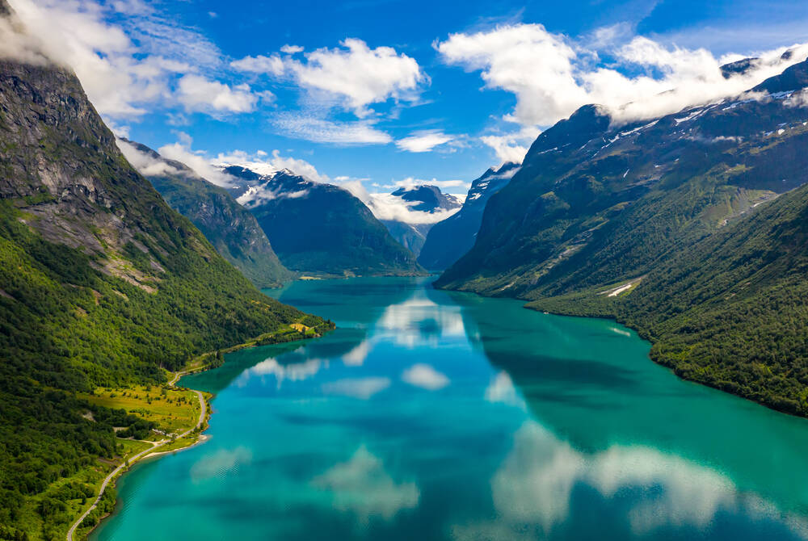
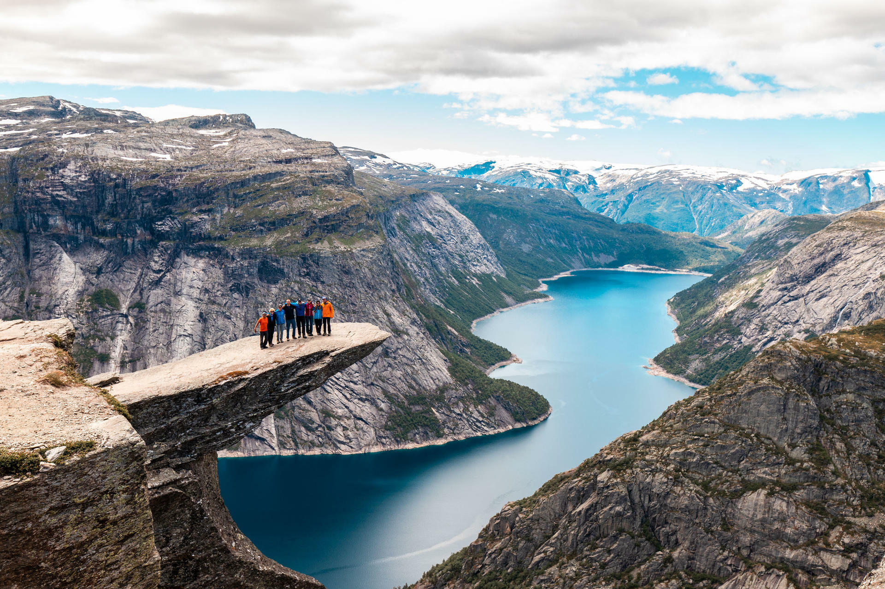

Norway - Land of Fjords
Rugged cliffs, deep fjords, and adventures that echo across time.

Geirangerfjord
A breathtaking fjord surrounded by snow-capped peaks and cascading waterfalls.

Trolltunga
A dramatic rock formation jutting over the fjord, inviting the brave wanderer to behold the view.
Cultural Spotlight
Norway is a land of fjords, ice, and legends. Viking history, folklore, and the mystical landscapes shape a country of adventure, from snow-capped peaks to serene waterways. Nature and culture intertwine in breathtaking harmony.
Practical Tips
- Best time to visit: June–August for warmer weather and long daylight.
- Must-pack items: layered clothing, hiking shoes, and waterproof gear.
- Experiences to dream of: fjords, waterfalls, glaciers, and scenic hikes.
- Immersion: Immerse yourself in folklore, legends, and local culture for a full experience.